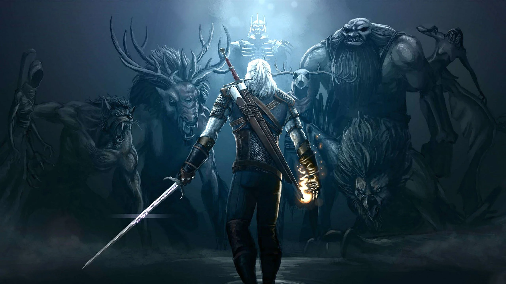
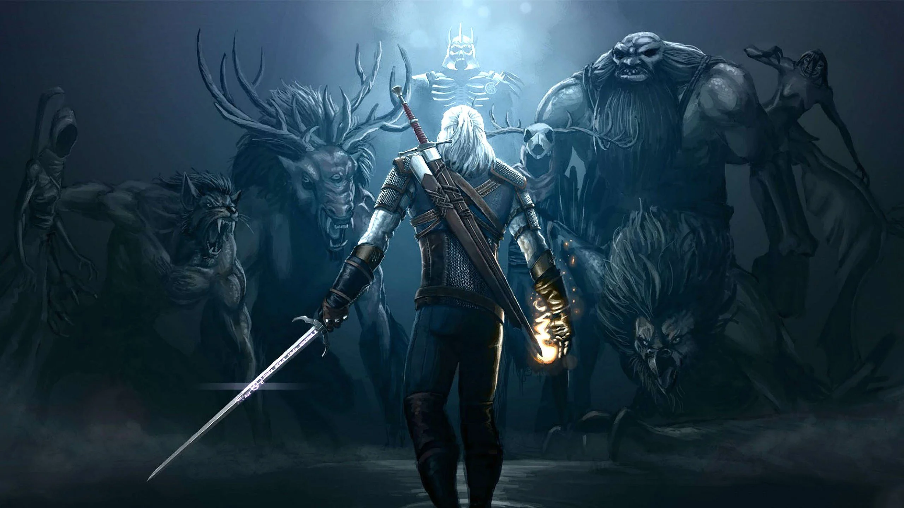
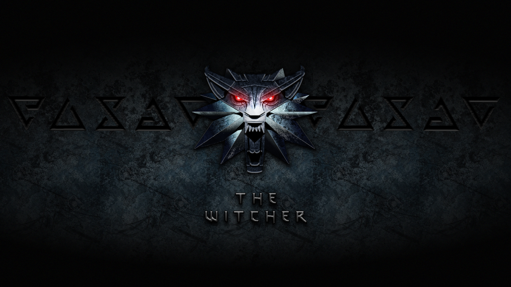
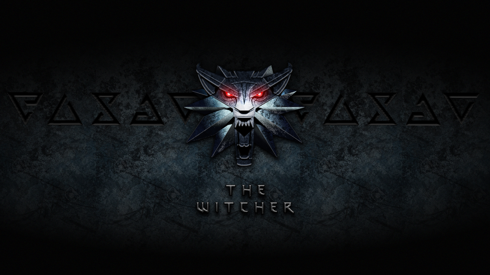

 

Resumo 1ª Temporada
Geralt, nosso protagonista, é um bruxo: trata-se de uma “classe” de seres humanos que passaram por mutações mágicas e receberam
superpoderes - existem poucos no mundo e eles passam por um treinamento quase mortal para desenvolver suas habilidades. No
mundo de The Witcher, estas pessoas não são muito bem vistas pela sociedade e Geralt vive por aí como um caçador de
recompensas, lutando contra monstros por dinheiro.
Um dia, um feiticeiro chamado Stregobor (Lars Mikkelsen) surge querendo contratar Geralt para matar a princesa Renfri
(Emma Appleton), que ele acredita ser amaldiçoada. A princesa, por sua vez, também quer derrotar o mago, mas Geralt se recusa
a tomar um lado, embora tanto Stregobor, quanto Renfri digam que isso está no “destino” dele. No fim, Geralt acaba matando a
princesa, que faz uma profecia, dizendo que há uma menina no destino do bruxo - que mais tarde descobriremos ser Ciri.
Fonte: Site adorocinema.
Resumo 2ª Temporada
Enquanto a 1ª temporada adaptou as histórias das coleções “Tales of the Witcher” para dar corpo aos personagens principais,
a 2ª temporada aborda os eventos de “Blood of Elves” e “Time of Contempt” – os dois primeiros livros da série de Sapkowski.
Assim, a segunda temporada segue a relação entre Geralt de Rivia (Henry Cavill) e Ciri (Freya Allan), uma jovem que ele adota
por meio da Lei da Surpresa. O destino paira de forma pesada sobre esses dois. Tudo isso, quando se torna claro que Ciri possui
poderes inexplorados que têm a capacidade de trazer um caótico bem ou um mal ao continente.
Dessa forma, a segunda temporada também investiga a história do continente, com mais detalhes sobre como os monstros passaram a
habitar a terra. Bem como o papel que os feiticeiros desempenharam em sua criação. Há também um pouco mais de elaboração e
conspiração política nas complexas tensões entre humanos, elfos, feiticeiros, bruxos e os povos do norte e do sul.
O último episódio, “Família”, envolve muitos dos ganchos abertos na 2ª temporada enquanto responde a perguntas sobre quem é Ciri.
E ainda, quais são seus poderes e o que a profecia ligada a ela significa. O explosivo final também apresenta a Chama Branca de
Nilfgaard, o Imperador Emhyr var Emreis – cuja verdadeira identidade nem mesmo um bruxo ou mago poderia imaginar.
A segunda temporada de The Witcher não é tanto sobre seu anti-herói titular. Mas sim sobre Cirilla, a Princesa de Cintra, ou Ciri,
como ela é chamada com mais frequência. Grande parte da segunda temporada se concentra em Ciri tentando aprender mais sobre ela e
sua linhagem enquanto diferentes facções a procuram. Isso inclui grupos como magos, elfos e nilfgaardianos. No entanto, indivíduos
como Voleth Meir (a Mãe Imortal), um misterioso mago do fogo chamado Reince e Yennefer também estão procurando Ciri.
Fonte: Site Mix de series.